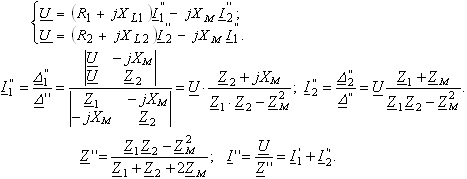

По аналогии запишем 2ЗК для первой и второй катушек, рассчитаем их токи и общий ток цепи:

Векторные диаграммы напряжений при согласном и встречном включении катушек представлены на (рис. 2.68, б и в). При построении ВД принято, что
L1 > M и L2 > M.
Условия L1 > M и L2 > M одновременно существовать не могут.
Сравнивая выражения для токов при согласном и встречном включении, замечаем, что токи I1" и I2" при встречном включении больше токов I1' и I2', т.к. частные определители Δ1" > Δ1' и Δ2" > Δ2'. Общий ток I' при согласном включении меньше общего тока I" при встречном включении в виду того, что входное сопротивление
Z'вх > Z''вх. |